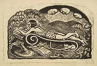

Wanda Gág
American, 1893-1946
Born in New Ulm, Minnesota, Wanda Gág grew up hearing the fairy
tales of her parents' native Bohemia, in a household filled with
music and literature. Her father was an artist who supported the family
by
decorating houses and churches, and he encouraged her interest in
art. She attended art school in St. Paul and Minneapolis, and won a
scholarship
to study at the Art Students League in New York in 1917. Although
first and foremost a printmaker (she had one-woman shows at the New
York
Public Library and the Weyhe Gallery, and was featured in group shows
at the Museum of Modern Art and the Metropolitan Museum, New York
during the 1930s and 1940s), her true fame rests with her children's
books. Millions of Cats won the Newbery Honor Award in 1929,
and The
ABC Bunny was given the same honor in 1934. Her art grew out
of her Bohemian heritage, yet is distinctly her own, using bold,
strong, lines
and sinuous forms which make inanimate objects terrifyingly alive,
and living creatures -- such as her cats, her mice, and herself,
whimsically engaging. In his "Notes on the Spiral Press," Joseph
Blumenthal remembered Wanda Gág. Writing about the calendars
they sent to friends of the press in the 1920s (each decorated with
six woodcuts by young American printmakers), he recalled that "Wanda
Gág made hers of subjects in our printshop, to the dismay
of our compositors and pressmen who thought wheels should really
be round."

Self Portrait, 1943
Linoleum cut
Signed and dated in pencil, lower right
Graphic Arts Division
Millions of Cats
New York: Coward-McCann, 1928
Graphic Arts Division
Other works in the exhibition:
- Snippy and Snappy
New York: Coward-McCann, 1931
Graphic Arts Division